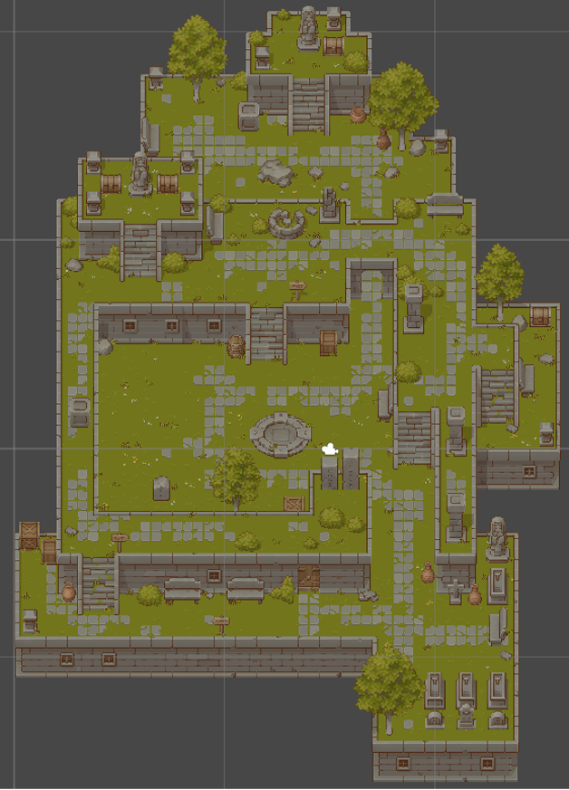

Project: Cubic Cat'astrophe
During this informatics project we were free to choose a subject. I, together with two other friends, decided to make a 2D top down game in Unity.
The game that we made was Cubic Cat'astrophe, where the player controlled Cubic Carfield (yes, garfield is not spelled with a C). The player could freely move move across the map, push boxes, shoot at enemies (Grumpy Crates). The player had a set amount of health and could be hit back by the enemies.
The project was very much about trial and error, as we had barely any experience with C# and most of our time was spend figuring out why things where breaking.
